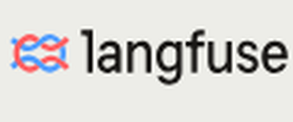

<!doctype html>
<html lang="hi" data-composition-variables='[
  {"id":"lang","type":"enum","label":"Language","default":"hi","options":[{"value":"hi","label":"Hindi (Hinglish)"}]},
  {"id":"voiceSrc","type":"string","label":"Voice track","default":"audio/hi/voice.wav"},
  {"id":"bedSrc","type":"string","label":"Music bed (ducked)","default":"audio/hi/bed.wav"},
  {"id":"sfxSrc","type":"string","label":"SFX track","default":"audio/hi/sfx.wav"}
]'>
  <head>
    <meta charset="UTF-8" />
    <meta name="viewport" content="width=1080, height=1920" />
    <title>Debug a wrong AI answer</title>
    <script src="assets/gsap.min.js"></script>
    <script src="data.js"></script>
    <link rel="stylesheet" href="kit/motion.css" />
    <script src="kit/motion.js"></script>
    <script src="kit/viz.js"></script>
    <style>
      @font-face { font-family: "Space Grotesk"; src: url("fonts/SpaceGrotesk.ttf"); font-weight: 300 700; }
      @font-face { font-family: "JetBrains Mono"; src: url("fonts/JetBrainsMono.ttf"); font-weight: 100 800; }
      @font-face { font-family: "Noto Sans Devanagari"; src: url("fonts/NotoSansDevanagari.ttf"); font-weight: 100 900; }
      /* ===== reel-specific CSS ===== */
    </style>
  </head>
  <body>
    <div id="root" data-composition-id="main" data-start="0" data-duration="73.5" data-width="1080" data-height="1920">
      <div id="bg" data-layout-allow-overflow>
        <div class="orb" id="orb1" data-layout-allow-overflow></div><div class="orb" id="orb2" data-layout-allow-overflow></div><div class="orb" id="orb3" data-layout-allow-overflow></div>
        <div id="floorwrap" data-layout-allow-overflow><div id="floor" data-layout-allow-overflow></div></div><div id="floorfade"></div>
        <div id="dust" data-layout-allow-overflow></div><div id="scan"></div><div id="vig"></div>
      </div>

      <div id="cam">
        <!-- ===== BEATS: one <div class="beat" id="sX"> per scene id in spec.json (order must match). Content lives at absolute px inside the 1080x1920 canvas, y 170-1300.
             Each beat is a PICTURE of the idea (diagram, map, flow, chart, metaphor), not the spoken sentence: see docs-notes/diagram-first-visuals.md ===== -->
        <div class="beat" id="sA"></div><div class="beat" id="sB"></div><div class="beat" id="sC"></div><div class="beat" id="sD"></div><div class="beat" id="sE"></div><div class="beat" id="sF"></div><div class="beat" id="sG"></div>
      </div>

      <div id="prog"><div id="progfill"></div></div>
      <div id="tag"><div id="tagdot"></div><span id="tagtxt"></span></div><div id="handle"></div>
      <div class="brk" id="b1"></div><div class="brk" id="b2"></div><div class="brk" id="b3"></div><div class="brk" id="b4"></div>
      <div id="caps"></div>
      <div id="flash"></div><div class="gl"></div><div class="gl"></div><div class="gl"></div><div class="gl"></div><div class="gl"></div><div id="wipe"></div>

      <audio id="voice" src="audio/hi/voice.wav" data-var-src="voiceSrc" data-start="0" data-duration="73.5" data-track-index="20" data-volume="1"></audio>
      <audio id="bed" src="audio/hi/bed.wav" data-var-src="bedSrc" data-start="0" data-duration="73.5" data-track-index="21" data-volume="1"></audio>
      <audio id="sfx" src="audio/hi/sfx.wav" data-var-src="sfxSrc" data-start="0" data-duration="73.5" data-track-index="22" data-volume="1"></audio>
    </div>

    <script>
      const M = Mo.init({ order: ["A","B","C","D","E","F","G"], tag: "AI ENGINEER INTERVIEW" });
      Viz.install(M);
      const { tl } = M; const at = (sc, w, n) => M.W(sc, w, n);
      const { ACC, CYAN, HOT, GOOD } = M;
      const A = M.$("#sA"), B = M.$("#sB"), C = M.$("#sC"), D = M.$("#sD"), E = M.$("#sE"), F = M.$("#sF"), G = M.$("#sG");
      const panel = (host, x, y, w, h, col, label) => { const d = M.mk("glass", host); d.style.cssText += `;left:${x}px;top:${y}px;width:${w}px;height:${h}px;border-color:${M.ca(col, 0.45)}`;
        if (label) { const l = M.mk("lab", d, label); l.style.cssText += `;left:26px;top:20px;font-size:32px;color:${col};text-align:left`; } return d; };
      const el = (host, css, html) => { const d = M.mk("abs", host); d.style.cssText += ";" + css; if (html != null) d.innerHTML = html; return d; };
      const show = (d, t, from) => { tl.set(d, { opacity: 0 }, 0); tl.fromTo(d, from || { opacity: 0, y: 24 }, { opacity: 1, x: 0, y: 0, scale: 1, duration: 0.45, ease: "power3.out", immediateRender: false }, t); return d; };
      const chip = (host, txt, t, cx, y, o) => { o = o || {}; const col = o.col || ACC, size = o.size || 44;
        const w = el(host, `left:${cx - 450}px;top:${y}px;width:900px;text-align:center;pointer-events:none`);
        const c = el(w, `position:relative;display:inline-block;padding:12px 32px;border:3px solid ${col};border-radius:999px;font:700 ${size}px var(--code);white-space:nowrap;letter-spacing:.04em;` + (o.solid ? `background:${col};color:#0E121E` : `background:rgba(14,18,30,.9);color:${col}`), txt);
        c.style.position = "relative"; return show(w, t); };
      const stamp = (host, txt, cx, y, col, t, size) => { const w = el(host, `left:${cx - 450}px;top:${y}px;width:900px;text-align:center`);
        el(w, `position:relative;display:inline-block;padding:14px 30px;border:3px solid ${col};border-radius:12px;background:rgba(14,18,30,.95);font:700 ${size || 52}px var(--code);color:${col};white-space:nowrap`, txt).style.position = "relative"; return show(w, t, { opacity: 0, scale: 1.08 }); };
      const header = (host, txt, t) => chip(host, txt, t, 540, 190, { solid: true, size: 46 });

      // ===== A: hook, a chat that answers wrong =====
      M.hook(["Chatbot gave a", "wrong answer?"], { size: 88, top: 215, until: 8.3 });
      // diagram: A
      chip(A, "INTERVIEW QUESTION", 0.1, 540, 430, { col: ACC, size: 36 });
      const chat = panel(A, 100, 560, 880, 460, CYAN, "SUPPORT CHAT"); show(chat, 0.02, { opacity: 0 });
      el(chat, "right:36px;top:110px;padding:22px 30px;border-radius:28px 28px 6px 28px;background:#26324A;font:600 44px var(--lat);white-space:nowrap", "refund kab milega?");
      const bot = show(el(chat, `left:36px;top:250px;padding:22px 30px;border-radius:28px 28px 28px 6px;background:${M.ca(CYAN, .14)};border:2px solid ${M.ca(CYAN, .6)};font:600 46px var(--lat);white-space:nowrap`,
        'Refund <b style="color:#5BC0EB">30 din</b> mein <span class="ok" style="color:#4CC38A">✓</span><span class="no" style="color:#E8596B;margin-left:-.62em;opacity:0">✗</span>'), 0.05, { opacity: 1 });
      const flip = at("A", "galat"); tl.set(bot.querySelector(".ok"), { opacity: 0 }, flip); tl.set(bot.querySelector(".no"), { opacity: 1 }, flip);
      tl.to(bot, { borderColor: M.ca(HOT, .9), backgroundColor: M.ca(HOT, .12), duration: 0.2, immediateRender: false }, flip);
      chip(A, "WHY?", at("A", "kyun"), 540, 1060, { col: HOT, size: 72, solid: true });
      [1, 2, 3].forEach((k) => chip(A, `${k} ?`, at("A", "cheezon") + (k - 1) * 0.14, 300 + (k - 1) * 240, 1200, { size: 64 }));
      M.fit(A, { y: 420, h: 880 });

      // ===== B: only the final answer is visible =====
      header(B, "ONLY THE END", M.P("B", 0));
      // diagram: B
      const seen = panel(B, 100, 330, 880, 230, HOT, "WHAT YOU SEE"); show(seen, M.P("B", 0) + 0.2);
      el(seen, `left:40px;top:110px;padding:14px 26px;border-radius:20px;background:${M.ca(HOT, .14)};border:2px solid ${M.ca(HOT, .8)};font:600 46px var(--lat);white-space:nowrap`, 'Refund 30 din mein <span style="color:#E8596B">✗</span>');
      M.icon(B, "eye", 790, 400, 130, HOT).show(M.P("B", 0) + 0.3);
      M.arrow(B, { from: [540, 580], to: [540, 680], color: ACC, w: 12 }).show(M.P("B", 0) + 0.4, 0.3);
      chip(B, "HIDDEN", M.P("B", 0) + 0.4, 540, 590, { col: "#8592AD", size: 36 });
      [["RETRIEVE", "retrieval", "search", 700], ["PROMPT", "prompt", "chat", 880], ["TOOL", "tool", "gear", 1060]].forEach(([lab, w, ic, y]) => {
        const c = el(B, `left:100px;top:${y}px;width:880px;height:150px;border-radius:24px;border:3px dashed ${M.ca(CYAN, .6)};background:${M.ca(CYAN, .08)}`);
        el(c, `left:200px;top:38px;font:800 56px var(--lat);color:#E8EDF6;white-space:nowrap`, lab);
        el(c, `right:50px;top:20px;font:800 90px var(--code);color:${HOT}`, "?");
        const k = (y - 700) / 180; show(c, M.P("B", 0) + 0.5 + k * 0.15); M.icon(B, ic, 130, y + 35, 80, CYAN).show(M.P("B", 0) + 0.6 + k * 0.15);
        tl.to(c, { borderColor: ACC, backgroundColor: M.ca(ACC, .14), duration: 0.25, immediateRender: false }, at("B", w)); });
      M.fit(B);

      // ===== C: the solution, traceability (what, when, why) =====
      header(C, "1 · SOLUTION", M.P("C", 0));
      // diagram: C
      M.box(C, { x: 250, y: 300, w: 480, h: 200, label: "AI SYSTEM", icon: "robot", color: CYAN }).show(M.P("C", 0) + 0.15);
      chip(C, "EXAMPLE", M.P("C", 0) + 0.3, 905, 370, { col: CYAN, size: 28 });
      chip(C, "TRACEABILITY", at("C", "solution"), 540, 520, { col: ACC, size: 60, solid: true });
      const tcards = [["WHAT", "kya", "search", "searched refund policy", 650], ["WHEN", "kab", "clock", "10:42:07", 840], ["WHY", "kyun", "eye", "user asked: refund?", 1030]];
      tcards.forEach(([lab, w, ic, ex, y], k) => {
        const c = el(C, `left:100px;top:${y}px;width:880px;height:170px;border-radius:24px;border:3px solid ${M.ca(CYAN, .6)};background:${M.ca(CYAN, .08)}`);
        el(c, `left:170px;top:16px;font:800 52px var(--lat);color:#E8EDF6;white-space:nowrap`, lab);
        const v = el(c, `left:170px;top:92px;font:600 44px var(--code);color:${CYAN};white-space:nowrap`, ex); tl.set(v, { opacity: 0 }, 0); tl.to(v, { opacity: 1, duration: 0.3, immediateRender: false }, at("C", w) - 0.05);
        show(c, M.P("C", 0) + 0.4 + k * 0.15); M.icon(C, ic, 125, y + 40, 90, CYAN).show(M.P("C", 0) + 0.5 + k * 0.15);
        tl.to(c, { borderColor: GOOD, backgroundColor: M.ca(GOOD, .12), duration: 0.3, immediateRender: false }, at("C", "chale")); });
      stamp(C, "TRACEABLE ✓", 540, 1215, GOOD, at("C", "chale") + 0.1, 52);
      M.fit(C);

      // ===== D: the tool, Langfuse =====
      header(D, "2 · TOOL", M.P("D", 0));
      // diagram: D
      show(el(D, "left:290px;top:290px;width:500px;height:150px;border-radius:24px;background:#fff;display:flex;align-items:center;justify-content:center", ''), M.P("D", 0) + 0.2);
      chip(D, "OPEN SOURCE", at("D", "open"), 540, 455, { col: GOOD, size: 40 });
      chip(D, "EXAMPLE", M.P("D", 0) + 0.4, 910, 345, { col: CYAN, size: 28 });
      show(panel(D, 60, 570, 960, 630, CYAN, "ONE TRACE"), M.P("D", 0) + 0.5);
      const drows = [["LLM CALL", "chat", "LLM", 1, .55], ["RETRIEVAL", "search", "retrieval", 0, .3], ["TOOL", "gear", "tool", 2, .8]];
      drows.forEach(([lab, ic, w, n, f], k) => { const y = 650 + k * 170;
        const c = el(D, `left:90px;top:${y}px;width:900px;height:150px;border-radius:22px;border:3px solid ${M.ca(CYAN, .5)};background:${M.ca(CYAN, .06)}`);
        el(D, `left:220px;top:${y + 16}px;font:800 44px var(--lat);color:#E8EDF6;white-space:nowrap`, lab).style.opacity = 1;
        const tr = el(D, `left:220px;top:${y + 90}px;width:600px;height:36px;border-radius:18px;background:${M.ca(CYAN, .18)}`);
        const fl = el(D, `left:220px;top:${y + 90}px;width:600px;height:36px;border-radius:18px;background:${CYAN};transform-origin:0 50%`); tl.set(fl, { opacity: 0, scaleX: 0.02 }, 0);
        tl.to(fl, { opacity: 1, scaleX: f, duration: 0.5, ease: "power3.out", immediateRender: false }, at("D", "timing"));
        const lbl = el(D, `left:220px;top:${y + 16}px;width:1px;height:1px`); void lbl;
        const grp = [c, tr]; grp.forEach((g) => show(g, M.P("D", 0) + 0.6 + k * 0.15));
        M.icon(D, ic, 115, y + 35, 80, CYAN).show(M.P("D", 0) + 0.7 + k * 0.15);
        tl.to(c, { borderColor: ACC, backgroundColor: M.ca(ACC, .14), duration: 0.25, immediateRender: false }, at("D", w, n)); });
      chip(D, "INPUTS →", at("D", "inputs"), 300, 1215, { col: CYAN, size: 38 }); chip(D, "→ OUTPUTS", at("D", "outputs"), 770, 1215, { col: CYAN, size: 38 });
      M.fit(D);

      // ===== E: trace = whole path, span = one unit of work =====
      header(E, "3 · TRACE & SPAN", M.P("E", 0));
      // diagram: E
      const stops = ["REQUEST", "RETRIEVE", "PROMPT", "TOOL", "ANSWER"], rail1 = [], t0 = M.P("E", 0) + 0.3;
      const rail = el(E, `left:197px;top:445px;width:10px;height:560px;background:${M.ca(CYAN, .35)};border-radius:5px;transform-origin:50% 0`); tl.set(rail, { opacity: 0, scaleY: 0 }, 0);
      tl.to(rail, { opacity: 1, scaleY: 1, duration: 0.5, ease: "power3.out", immediateRender: false }, t0); rail1.push(rail);
      const tR = at("E", "poora");
      stops.forEach((lab, i) => { const y = 340 + i * 160;
        const d = el(E, `left:150px;top:${y}px;width:104px;height:104px;border-radius:50%;border:5px solid ${M.ca(CYAN, .6)};background:#0E121E;display:flex;align-items:center;justify-content:center;font:800 50px var(--code);color:#E8EDF6`, String(i + 1));
        show(d, t0 + i * 0.1, { opacity: 0, scale: 0.7 }); rail1.push(d);
        rail1.push(show(el(E, `left:300px;top:${y + 20}px;font:800 58px var(--lat);color:#E8EDF6;white-space:nowrap`, lab), t0 + i * 0.1));
        tl.to(d, { backgroundColor: M.ca(GOOD, .5), borderColor: GOOD, duration: 0.25, immediateRender: false }, tR + i * 0.25); });
      rail1.push(chip(E, "OPENTELEMETRY", at("E", "OpenTelemetry"), 540, 1130, { col: CYAN, size: 46 }));
      rail1.push(chip(E, "EXAMPLE", t0, 540, 1230, { col: CYAN, size: 34 }));
      const tSpan = at("E", "span");
      tl.to(rail1, { opacity: 0, duration: 0.25, ease: "power2.in", immediateRender: false }, tSpan - 0.35);
      const sb = el(E, `left:60px;top:330px;width:960px;height:150px;border-radius:24px;border:4px solid ${CYAN};background:${M.ca(CYAN, .2)};display:flex;align-items:center;justify-content:center;font:800 64px var(--lat);color:#E8EDF6`, "retrieve");
      show(sb, tSpan - 0.1, { opacity: 0, x: -40 });
      chip(E, "START", tSpan + 0.3, 190, 500, { col: GOOD, size: 40 }); chip(E, "END", tSpan + 0.45, 880, 500, { col: HOT, size: 40 });
      const card = panel(E, 100, 620, 880, 470, CYAN, "ONE SPAN"); show(card, tSpan + 0.15);
      const rows = [["name", "retrieve", "name"], ["start", "0.00 s", "start"], ["end", "0.42 s", "end"], ["attrs", "doc=old_policy", "attributes"]];
      const rowEls = rows.map(([k, v, w], i) => { const r = el(card, `left:44px;top:${95 + i * 85}px;font:700 50px var(--code);white-space:nowrap`, `<span style="color:#8592AD;display:inline-block;width:190px">${k}</span><span class="v" style="color:#E8EDF6">${v}</span>`); show(r, tSpan + 0.3 + i * 0.12);
        const vv = r.querySelector(".v"); tl.set(vv, { color: "#566179" }, 0); tl.to(vv, { color: "#E8EDF6", duration: 0.25, immediateRender: false }, at("E", w)); return r; });
      const tRed = at("E", "laal");
      tl.to(sb, { borderColor: HOT, backgroundColor: M.ca(HOT, .22), duration: 0.25, immediateRender: false }, tRed);
      tl.to(rowEls[3].querySelector(".v"), { color: HOT, duration: 0.25, immediateRender: false }, tRed);
      stamp(E, "WRONG DOC", 540, 1130, HOT, tRed + 0.1, 56);
      chip(E, "EXAMPLE", at("E", "maan"), 540, 1240, { col: CYAN, size: 36 });
      M.fit(E);

      // ===== F: hierarchy, parent span ID =====
      header(F, "HIERARCHY", M.P("F", 0));
      // diagram: F
      const bar = (host, x, y, w, lab, col, t, fill) => { const b = el(host, `left:${x}px;top:${y}px;width:${w}px;height:120px;border-radius:20px;border:4px solid ${col};background:${M.ca(col, fill || .2)};display:flex;align-items:center;justify-content:center;font:800 42px var(--lat);color:#E8EDF6;white-space:nowrap`, lab); show(b, t, { opacity: 0, x: -30 }); return b; };
      const root = bar(F, 60, 330, 940, "REQUEST (root)", ACC, M.P("F", 0) + 0.25, .16);
      const kids = [["retrieve", 70, 300, HOT, "Spans"], ["prompt", 370, 270, CYAN, "nested"], ["tool", 640, 170, CYAN, "parent"], ["answer", 810, 190, GOOD, "child"]];
      const rail2 = el(F, `left:38px;top:450px;width:6px;height:${4 * 150 - 30}px;background:${M.ca(ACC, .6)};border-radius:3px;transform-origin:50% 0`); tl.set(rail2, { opacity: 0, scaleY: 0 }, 0);
      tl.to(rail2, { opacity: 1, scaleY: 1, duration: 0.6, ease: "power3.out", immediateRender: false }, at("F", "parent"));
      kids.forEach(([lab, x, w, col, wd], i) => { const y = 500 + i * 150;
        bar(F, x, y, w, lab, col, at("F", wd), col === HOT ? .28 : .2);
        const tick = el(F, `left:44px;top:${y + 58}px;width:${x - 44}px;height:0;border-top:4px dashed ${M.ca(ACC, .7)}`); show(tick, at("F", "parent") + 0.2 + i * 0.12, { opacity: 0 }); });
      chip(F, "PARENT SPAN ID", at("F", "ID"), 540, 1130, { col: ACC, size: 46 });
      tl.to(root, { borderColor: "#fff", duration: 0.3, immediateRender: false }, at("F", "hierarchy"));
      M.fit(F);

      // ===== G: close =====
      header(G, "FULL PATH", M.P("G", 0));
      // diagram: G
      [["RETRIEVE", "search", 60], ["PROMPT", "chat", 400], ["TOOL", "gear", 740]].forEach(([lab, ic, x]) => {
        const c = el(G, `left:${x}px;top:340px;width:280px;height:330px;border-radius:24px;border:3px solid ${M.ca(CYAN, .6)};background:${M.ca(CYAN, .08)}`); show(c, M.P("G", 0) + 0.3);
        M.icon(G, ic, x + 70, 370, 140, CYAN).show(M.P("G", 0) + 0.4);
        el(G, `left:${x}px;top:550px;width:280px;text-align:center;font:800 40px var(--lat);color:#E8EDF6`, lab);
        el(G, `left:${x + 190}px;top:352px;font:800 70px var(--code);color:${ACC}`, "?"); });
      const cc = panel(G, 100, 740, 880, 340, CYAN, "COMMENT KARO"); show(cc, at("G", "Comment") - 0.2);
      [["RETRIEVE", "retrieve", 30], ["PROMPT", "prompt", 330], ["TOOL", "tool", 600]].forEach(([lab, w, x]) => { const wr = el(cc, `left:${x}px;top:150px;width:260px`); const c = el(wr, `position:relative;display:inline-block;padding:10px 26px;border:3px solid ${ACC};border-radius:999px;font:700 40px var(--code);color:${ACC}`, lab); c.style.position = "relative"; show(wr, at("G", w)); });
      const fb = chip(G, "+  FOLLOW", at("G", "follow") - 0.3, 540, 1150, { col: ACC, size: 46, solid: true });
      tl.fromTo(fb, { scale: 1 }, { scale: 0.92, duration: 0.12, yoyo: true, repeat: 1, immediateRender: false }, at("G", "follow"));
      M.fit(G);

      M.wipe(M.S.B); M.wipe(M.S.C); M.wipe(M.S.D); M.wipe(M.S.E); M.wipe(M.S.F); M.wipe(M.S.G);
      M.finish({ kw: { galat: "hot", traceability: "gold", traceable: "gold", Langfuse: "cyan", trace: "cyan", span: "cyan", spans: "cyan", hierarchy: "gold", raasta: "gold", laal: "hot", retrieval: "gold", parent: "gold" } });
      window.__timelines["main"] = tl;

    </script>
  </body>
</html>
